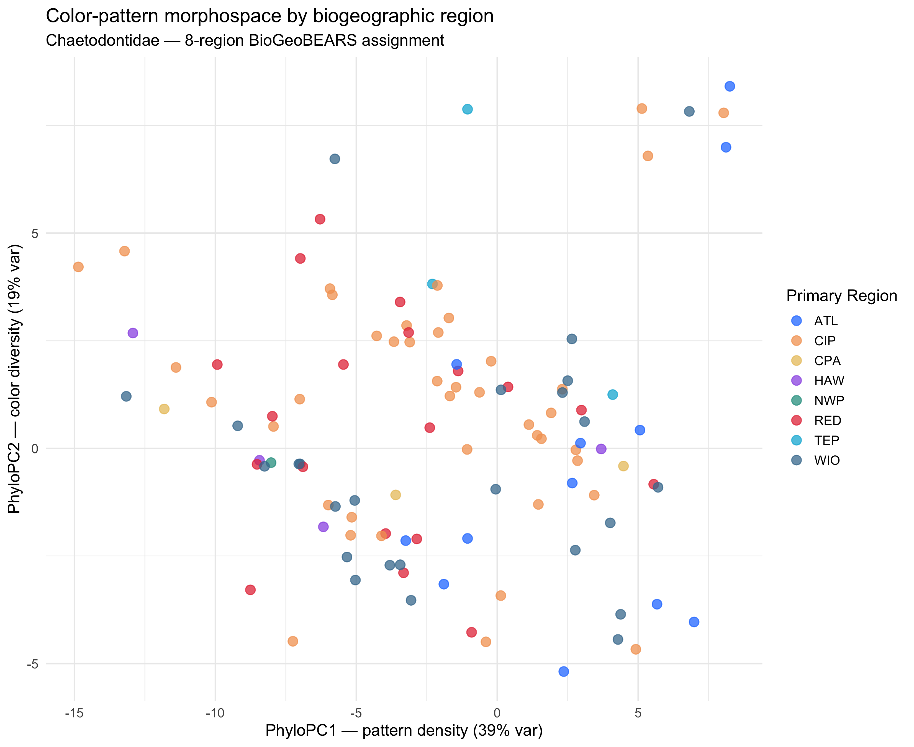

Does color diversity differ between ocean basins in Chaetodontidae?
Tip
Advanced recipe. Uses the 8-region BioGeoBEARS coding from the chaets-divergence project (ATL, RED, WIO, CIP, NWP, CPA, HAW, TEP) to test whether biogeographic region predicts color-pattern variation. Each species is assigned to one or more regions; we use the primary region (first listed) for categorical tests and the full coding for a multi-region ordination overlay.
Poster outputs.figures/biogeographic-color-hero.pdf – PC1 vs PC2 ordination colored by primary region, plus boxplots of PC scores by region.
What you’re computing
Load 8-region assignments from chaet_master_traits.csv (sourced from the chaets-divergence BioGeoBEARS analysis).
Merge with phylogenetic PC scores.
Phylogenetic ANOVA: does primary region predict PC1 or PC2?
Ordination plot: PC1 x PC2 colored by primary region.
ATL CIP CPA HAW NWP RED TEP WIO
12 41 3 4 1 19 3 25
cat(sprintf("\nNumber of regions per species: %d--%d (median %.0f)\n",min(df$n_regions), max(df$n_regions), median(df$n_regions)))
Number of regions per species: 1--5 (median 2)
Region color palette
region_pal <-c(ATL ="#2a7fff", RED ="#e63946", WIO ="#457b9d",CIP ="#f4a261", NWP ="#2a9d8f", CPA ="#e9c46a",HAW ="#9b5de5", TEP ="#00b4d8")
Ordination: PC1 x PC2 by region
p_ord <-ggplot(df, aes(x = PC1, y = PC2, color = primary_region)) +geom_point(size =3.5, alpha =0.75) +scale_color_manual(values = region_pal, name ="Primary Region") +labs(x =sprintf("PhyloPC1 — pattern density (%.0f%% var)", ve[1]),y =sprintf("PhyloPC2 — color diversity (%.0f%% var)", ve[2]),title ="Color-pattern morphospace by biogeographic region",subtitle ="Chaetodontidae — 8-region BioGeoBEARS assignment") +theme_minimal(base_size =14) +theme(legend.position ="right")print(p_ord)

PhyloPC1 x PC2 colored by primary biogeographic region.
PGLS: region as categorical predictor
We fit PGLS with primary region as a factor. Because some regions have very few species (e.g., HAW, TEP), we group small regions into an “Other” category for the statistical test to avoid singular fits.
# Group rare regionsregion_counts <-table(df$primary_region)major_regions <-names(region_counts[region_counts >=5])df$region_group <-ifelse(df$primary_region %in% major_regions, df$primary_region, "Other")df$region_group <-factor(df$region_group)cat("Region grouping for PGLS:\n")
Region grouping for PGLS:
print(table(df$region_group))
ATL CIP Other RED WIO
12 41 11 19 25
fit_pgls_cat <-function(response, df, tree) { f <-as.formula(paste(response, "~ region_group")) starts <-c(0.5, 0.9, 0.1, 0.99, 0.01) ctrl <-glsControl(opt ="optim", maxIter =200, msMaxIter =200)for (lam0 in starts) { m <-tryCatch(gls(f, data = df,correlation =corPagel(lam0, tree, form =~species, fixed =FALSE),method ="ML", control = ctrl),error =function(e) NULL)if (!is.null(m)) return(m) }gls(f, data = df,correlation =corPagel(1, tree, form =~species, fixed =TRUE),method ="ML", control = ctrl)}extract_lambda <-function(m) {tryCatch(as.numeric(coef(m$modelStruct$corStruct, unconstrained =FALSE)),error =function(e) 1.0)}m_pc1 <-fit_pgls_cat("PC1", df, tree_b)m_pc2 <-fit_pgls_cat("PC2", df, tree_b)lam_pc1 <-extract_lambda(m_pc1)lam_pc2 <-extract_lambda(m_pc2)cat("\nPGLS: PC1 ~ region_group\n")
Warning in grid.Call.graphics(C_text, as.graphicsAnnot(x$label), x$x, x$y, :
for 'PhyloPC1 — pattern density (39% var)' in 'mbcsToSbcs': - substituted for —
(U+2014)
Warning in grid.Call.graphics(C_text, as.graphicsAnnot(x$label), x$x, x$y, :
for 'PhyloPC2 — color diversity (19% var)' in 'mbcsToSbcs': - substituted for —
(U+2014)
Warning in grid.Call.graphics(C_text, as.graphicsAnnot(x$label), x$x, x$y, :
for 'Chaetodontidae — 8-region BioGeoBEARS assignment' in 'mbcsToSbcs': -
substituted for — (U+2014)
Warning in grid.Call.graphics(C_text, as.graphicsAnnot(x$label), x$x, x$y, :
for 'PhyloPC1 — pattern density (39% var)' in 'mbcsToSbcs': - substituted for —
(U+2014)
Warning in grid.Call.graphics(C_text, as.graphicsAnnot(x$label), x$x, x$y, :
for 'PhyloPC2 — color diversity (19% var)' in 'mbcsToSbcs': - substituted for —
(U+2014)
Chaetodontidae are predominantly Indo-Pacific, with a handful of Atlantic endemics (Prognathodes + a few Caribbean Chaetodon). The 8-region coding from BioGeoBEARS allows a finer decomposition than the binary Atlantic/Indo-Pacific split used in simpler analyses.
If the omnibus PGLS F-test is significant for PC1, it indicates that pattern complexity differs across ocean basins after controlling for phylogeny. Atlantic Prognathodes tend to be deep-water, less colorful species, which may drive a region effect on PC2 (color diversity).
The ordination overlay reveals whether region-based clusters emerge in color space, or whether phylogenetic history dominates the pattern (i.e., closely related species are near each other regardless of region). A strong region signal after phylogenetic correction would suggest convergent evolution of color phenotypes within basins.
Output files for the poster
File
What to use it for
figures/biogeographic-color-hero.pdf
3-panel: ordination colored by region + boxplots of PC1 and PC2 by region